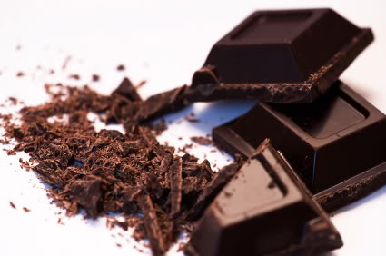

Animals
Cats
British Blue

Британската късокосместа котка е порода домашна котка произхождаща от Великобритания. Мъжките екземпляри тежат от 5-10 кг, а женските 5-7 кг. Има къса гъста козина и също така гъст подкосъм.
Russian Blue

Руската синя котка е късокосместа порода домашна котка, произхождаща от Русия, близо до град Архангелск. [1] В Англия, където е и призната, е донесена около 1960 от архангелски моряци.
Sources
- Alderton, David. The Eyewitness Handbook of Cats. Dorling Kindersley, 1992. ISBN 1-56458-070-9. с. p. 182.
Dogs
Huskey

Сибирското хъски е порода куче, която произлиза от източната част на Сибир. Сибирските хъскита са първоначално селектирани от чукчите в североизточна Азия, по-късно внесени от търговци в Аляска, САЩ и Канада.
Foods
Chocolates
Dark Chocolate
Натуралният шоколад е с високо съдържание на какао. В зависимост от видът, може да варира от 70 до над 90%.
White Chocolate

Белият шоколад е производно на шоколада, което официално не може да бъде наречено шоколад. Характеризира се с бледо жълт цвят, подобен на слонова кост.
Copyright © 2015